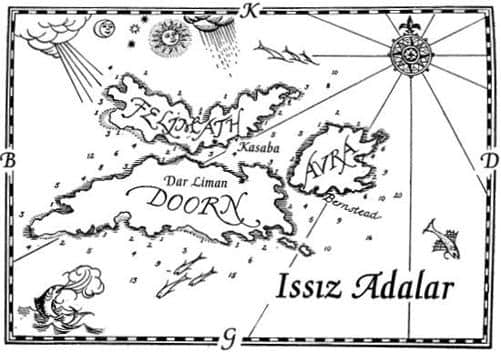
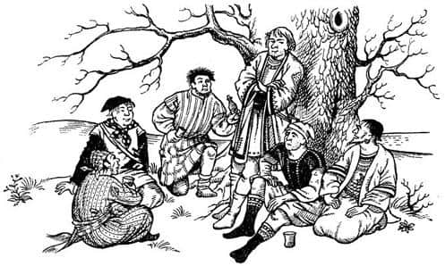
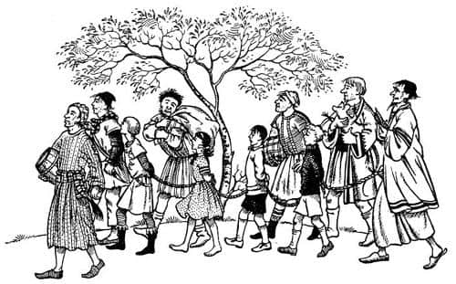
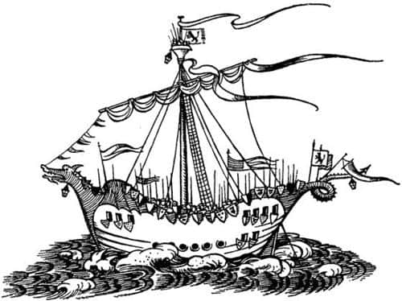

Issız Adalar
“Kara göründü” diye bağırdı burundaki adam.
Geminin kıçında Rhince’le konuşmakta olan Lucy, patırtıyla merdivenlerden inip, buruna doğru koştu. Edmund da ona katıldı, buruna vardıklarında Caspian, Drinian ve Bastıbacak’ı orada buldular. Serin bir sabahtı; gökyüzü açık, denizse lacivertti. Denizin üzeri küçük beyaz köpüklerle kaplıydı. Az ileride, burnun biraz sağında, Issız Adalar’ın en yakın olanı, denizden yükselen yeşil bir tepe gibi görünen Felimath, onun hemen arkasında da kurşuni yamaçlarıyla kardeşi Doorn vardı.
“Felimath ve Doorn, tıpkı eskisi gibiler!” dedi Lucy ellerini çırparak. “Ah, Edmund, onları son gördüğümüzden bu yana ne kadar çok zaman geçti!”
“Bunların neden Narnia’ya ait olduğunu hiç anlayamadım” dedi Caspian. “Yüce Kral Peter mi fethetmişti bu adaları?”
“Yo, hayır” dedi Edmund. “Onlar bizim zamanımızdan önce de Narnia’ya aitti; Beyaz Cadı’nın zamanında.” (Bu arada, bu uzak adaların Narnia Krallığı’na nasıl bağlandığını hiç duymadım; eğer duyarsam ve ilginç bir hikâyeyse bir başka kitaba koyabilirim.)
“Burada demirleyecek miyiz, efendim?” diye sordu Drinian.
“Felimath’a çıkmanın pek yararı olacağını sanmıyorum” dedi Edmund. “Bizim zamanımızda orası neredeyse ıssız bir adaydı, şimdi de öyle gibi görünüyor. İnsanlar çoğunlukla Doorn’da yaşıyorlardı. Avra’da da yaşayanlar vardı – Avra üçüncü adadır; henüz görünmüyor. Felimath’a sadece koyunlarını otlamaya bırakırlardı.”
“O zaman sanırım şu burnun arkasına dolaşmamız ve Doorn’da karaya çıkmamız gerekiyor” dedi Drinian “ki bu, kürek çekmek anlamına geliyor.”

“Felimath’ta karaya çıkmadığımıza üzgünüm” dedi Lucy. “Orada tekrar yürümek isterdim. O kadar ıssız bir yerdi ki – müthiş bir sessizlik; otlar, yoncalar ve yumuşak deniz havasından başka hiçbir şey yoktu.”
“Benim bacaklarımın da egzersize ihtiyacı var” dedi Caspian. “Kayıkla karaya çıktıktan sonra kayığı geri gönderelim ve adanın diğer tarafına yürüyüp Şafak Yıldızı’yla orada buluşalım, ne dersiniz?”
Caspian, bu yolculuktan sonra edineceği tecrübeye önceden sahip olsaydı asla bu teklifi yapmazdı; ama o anda mükemmel bir fikir gibi görünmüştü. “Evet, dediğin gibi yapalım” dedi Lucy.
“Sen de geleceksin değil mi?” dedi Caspian, kollarını kavuşturmuş güverteye çıkan Eustace’e.
“Bu kör olası gemiden inmek için her şeyi yaparım” dedi Eustace.
“Kör olası mı?” dedi Drinian. “Ne demek istiyorsun?”
“Geldiğim yer gibi uygar ülkelerde” dedi Eustace, “gemiler öyle büyüktür ki, içindeyken denizde olduğunu anlayamazsın.”
“O halde sen de bizimle karaya çıksan iyi olur” dedi Caspian. “Kayığı denize indirmelerini söyler misin Drinian?”
Kral, fare, iki Pevensie ve Eustace kayığa binip Felimath’taki kumsala gittiler. Kayık onları bıraktıktan sonra geriye dönerken, hepsi etraflarına bakıyordu. Şafak Yıldızı’nın ne kadar küçük göründüğüne şaşırmışlardı.
Lucy yüzerken ayakkabılarını çıkardığı için yalınayaktı, ama burada yer tüylerle kaplanmış gibiydi ve yalınayak yürümek sorun olmayacaktı. Eğer insan bir süredir denizdeyse, karaya ilk ayak bastığında, sanki yer bir gemiymiş de aşağı yukarı hareket ediyormuş gibi hisseder. Ama ne olursa olsun tekrar karada yürümek, toprağı ve otları hissetmek harikaydı. Burası gemiden çok daha sıcaktı ve Lucy sahilde yürürken kumların ayaklarına iyi geldiğini fark etmişti. Bir tarlakuşu şarkı söylüyordu.
Adanın içine doğru yürüdüler ve alçak, ama oldukça dik bir tepeye tırmandılar. Zirveden geriye, geldikleri yere baktılar ve büyük parlak bir böcek gibi ışıldayan, kürekleriyle ağır ağır kuzeybatıya doğru ilerleyen Şafak Yıldızı’nı gördüler. Sonra diğer yamaca geçtiler ve artık onu göremez oldular.
Yaklaşık bir mil genişliğinde bir boğazla Felimath’tan ayrılmış olan Doorn önlerinde uzanıyordu; onun arkasında sol tarafta Avra uzanmaktaydı. Doorn’daki küçük ve beyaz Dar Liman kasabasını rahatlıkla görebiliyorlardı.
“Hey! Bu da ne?” dedi Edmund aniden.
İnmekte oldukları yeşil vadide, hepsi silahlı altı-yedi kaba görünüşlü adam bir ağacın altında oturuyordu.
“Onlara kim olduğumuzu söylemeyin” dedi Caspian.
“Majesteleri, neden olmasın?” dedi Bastıbacak. Lucy’nin omuzlarına binmeye razı olmuştu.
“Buradaki insanların uzun süredir Narnia’dan haber almamış olma ihtimali aklıma geldi” diye cevapladı Caspian. “Bizim onları yöneten lordlar olduğumuza inanabilirler. Şu anda kral olarak tanınmak pek güvenli olmayabilir.”
“Kılıçlarımız var, efendim” dedi Bastıbacak.
“Evet Bastıbacak, biliyorum” dedi Caspian. “Eğer sorun bu üç adayı yeniden fethetmekse, bunu büyük bir orduyla yapmayı tercih ederim.”
Bu arada yabancılara oldukça yaklaşmışlardı. İçlerinden biri – siyah saçlı, iriyarı bir adam – “Günaydın sizlere” diye bağırdı.
“Size de günaydın.” dedi Caspian. “Issız Adalar’ın hâlâ bir valisi var mı?”
“Emin olun var” dedi adam, “Vali Gumpas. Kendileri Dar Liman’da. Bizimle oturup içki içmeye ne dersiniz?”
Caspian teşekkür etti. O da, çocuklar da, bu insanların görünüşünden hoşlanmamışlardı, ama yine de yanlarına oturmaya karar verdiler. Daha bardakları ağızlarına bile götürmelerine fırsat kalmadan siyah saçlı adam başıyla bir işaret verdi ve diğer adamlar Caspian’la çocukları güçlü kollarıyla yakaladı. Kısa bir süre mücadele ettiler ancak adamlar onlardan daha kuvvetliydi ve az sonra – onu yakalayan adamın ellerinde kıvranan ve öfkeyle sağı solu ısıran Bastıbacak hariç – herkesin silahları alınmış ve elleri arkalarında bağlanmıştı.

“O hayvana dikkat et Tacks” dedi Reisleri. “Ona zarar verme. Hepsinin içinde en iyi parayı o getirecek.”
“Korkak! Kalleş!” diye viyakladı Bastıbacak. “Sıkıyorsa pençelerimi serbest bırak ve kılıcımı ver.”
“Üf be!” diye ıslık çaldı köle taciri (onun işi buydu). “Konuşabiliyor! Hiç görmemiştim. İki yüz Ay Lirası’ndan aza satarsam kellemi kessinler.” O civarlardaki en geçerli para olan Calormen Ay Lirası’nın değeri, bir sterlinin üçte biri kadardı.
“Ne olduğun anlaşılıyor” dedi Caspian. “Bir fidyeci ve köle tacirisin. Umarım bununla gurur duyuyorsundur.”
“Cık, cık, cık, cık” dedi köle taciri. “Çene yapmaya başlama. Durumu ne kadar çabuk kabullenirseniz, hepimiz için o kadar iyi olur, anlıyor musun? Ben bunu zevk için yapmıyorum. Herkes gibi ben de ekmeğimi kazanmak zorundayım.”
“Bizi nereye götüreceksiniz?” diye sordu Lucy. Sözler ağzından güçlükle çıkmıştı.
“Dar Liman’a” dedi köle taciri. “Yarınki pazara.”
“Orada Britanya Konsolosluğu var mı?” diye sordu Eustace.
“Ne var mı?” dedi adam.
Eustace açıklamaya çalışmaktan bitkin düşmeden önce köle taciri, “Eh, bu kadar saçmalık yeter. Fare iyi para getirebilir, ama bu çenesi düşük çok gürültü yapıyor. Neyse, haydi gidelim arkadaşlar” dedi.
Sonra dört tutsak birbirlerine bağlanıp sahile doğru yürütüldü. Onları gaddarlık olsun diye değil, kaçmasınlar diye böyle bağlamışlardı. Bastıbacak’ı kucaklarında taşıyorlardı. Adamların ellerini ısırıyordu, ama ağzını bağlamakla tehdit ettiklerinde ısırmayı bırakmıştı. Durmadan konuşuyordu ve Lucy, farenin köle tacirine söylediği şeylere bu adamın nasıl olup da dayanabildiğini merak ediyordu. Ancak köle taciri Bastıbacak’ı susturmak yerine, o nefes almak için durakladığında, “Devam et” diyor, bazen de “Bir tiyatro oyunu kadar iyi” ya da “Vallahi mantıklı şeyler söylediğini düşünmekten alamıyor insan kendisini!” veya “Onu içinizden biri mi eğitti?” diyordu. Bu sözler Bastıbacak’ı çok öfkelendirdi. Bu öfkeyle adama söylemek istediği öyle çok şey vardı ki, hepsini birden söylemeye kalktığında neredeyse boğuluyordu ve susmak zorunda kaldı.
Doorn’a bakan sahile indiklerinde küçük bir köy, sahile çekilmiş bir kayık ve az ilerde demirlenmiş pis, hurda bir gemi gördüler.
“Şimdi, gençler” dedi köle taciri, “hiç yaygara etmeyin böylece ağlamak için bir nedeniniz de olmaz. Herkes gemiye.”

O anda evlerin birinden (sanırım bir handı bu) iyi görünümlü bir adam çıktı ve:
“Hey Pug. Her zamanki işlerinden biri mi?” diye sordu.
Adının Pug olduğu anlaşılan köle taciri yere kadar eğilerek selam verdi ve yaltaklanan bir sesle “Evet, Sayın Lordum” dedi.
“Şu çocuk için kaç para istiyorsun?” dedi adam Caspian’ı göstererek.
“Ah” dedi Pug. “Lordlarının en iyisini seçeceğini biliyordum. Kimse lordumuzu ikinci kalite bir şeyle aldatamaz. Ama o çocuğu ben de beğeniyorum. Hoşlanıyorum, evet. Öyle yumuşak kalpliyim ki, bu işi yapmamalıyım. Yine de Lordumuz gibi bir müşteriye—”
“Bana fiyatını söyle leş kargası” dedi Lord sert bir sesle. “Senin pis işinin ayrıntılarını merak ettiğimi mi sanıyorsun?”
“Üç yüz Ay Lirası Lordum, bu, siz saygıdeğer Lord için, başkası olsaydı—”
“Yüz elli veririm.”
“Ah, lütfen, lütfen” diye araya girdi Lucy. “Ne yaparsanız yapın, ama bizi ayırmayın. Biliyorsunuz ki—” Ardından durakladı, çünkü Caspian hâlâ kimliğini gizlemek istiyordu.
“Yüz elli öyleyse” dedi Lord. “Sana gelince küçük bayan, üzgünüm, ama hepinizi satın alamam. Çocuğun iplerini çöz Pug. Ve beni dinle – diğerlerine de iyi davran, yoksa pişman olursun.”
“Eh” dedi Pug. “Meslektaşlarım arasında malına benden daha iyi bakan birini kim görmüş, ha? Ben onlara kendi çocuklarım gibi bakarım.”
“Dilerim doğrudur” dedi Lord ümitsizce.
Şimdi o korkunç an gelmişti. Caspian’ın bağları çözüldü ve yeni sahibi, “Bu yoldan, delikanlı” dediğinde Lucy gözyaşlarına boğuldu, Edmund şaşkındı. Caspian geriye bakarak, “Üzülmeyin. Eminim sonunda her şey düzelecek. Görüşürüz” dedi.
“Şimdi, küçük bayan” dedi Pug. “Kendini üzüp de yarın pazardaki görünümünü bozmaya kalkma. Uslu dur ki ağlamak için bir nedenin olmasın, anlıyor musun?”
Sonra kayıkla köle gemisine götürüldüler ve talihsiz bir sürü başka esirin de bulunduğu, leş gibi, uzun ve oldukça karanlık bir yere sokuldular. Pug bir korsandı, adalar arasında dolaşıp oralardan esir toplamıştı. Çocuklar tanıdık birine rastlamadılar; esirlerin çoğu Galma ve Terebinthialılar’dı. Samanların üzerine oturdular ve Eustace’in sanki kendisi hariç herkes suçluymuş gibi konuşmasını engellemeye çalıştılar. Hepsi Caspian’ı merak ediyordu.
Bu arada Caspian çok daha ilginç şeyler yaşıyordu. Onu satın alan adam, Caspian’ı iki köy evi arasındaki küçük bir sokaktan köyün ardındaki açık alana çıkardı. Sonra dönüp ona baktı.
“Benden korkmana gerek yok oğlum” dedi. “Sana iyi davranacağım. Seni yüzünden dolayı satın aldım. Bana birini hatırlatıyorsun.”
“Kimi hatırlattığımı sorabilir miyim Lordum?” dedi Caspian.
“Bana, efendim Narnialı Kral Caspian’ı hatırlatıyorsun.”
Bunu duyunca Caspian tehlikeyi göze almaya karar verdi.
“Lordum” dedi, “Ben senin efendinim. Ben Caspian’ım. Narnia Kralı.”
“Laubalileşiyorsun” dedi Lord. “Bunun gerçek olduğunu nereden bileyim ki?”
“Öncelikle yüzümden” dedi Caspian. “İkincisi de altıncı tahminimde senin kim olduğunu bilirim de ondan. Sen, amcam Miraz’ın denize gönderdiği ve benim de aramaya çıktığım yedi lorddan birisin… Argoz, Bern, Octesian, Restimar, Mavramorn, ya da… ya da… diğerlerini unuttum. Son olarak da, eğer bana bir kılıç verirlerse, adil bir dövüşte herhangi birinin cesedi üzerine Narnia’nın yasal kralı, Caspian’ın oğlu Caspian, Cair Paravel’in lordu ve Issız Adalar’ın imparatoru olduğumu ispatlarım.”
“Aman Tanrım” dedi hayretle adam, “sesi ve konuşma tarzı aynı babası. Emrinize amadeyim Majesteleri—” Ve hemen oracıkta, tarlada diz çöküp kralının elini öptü.
“Lordlarının şahsıma yaptığı harcama hazinemizden karşılanacaktır” dedi Caspian.
“Paralar henüz Pug’ın kesesinde değil efendim” dedi Lord Bern. (Adı buydu.) “Bana öyle geliyor ki asla da olmayacak. Yüzlerce kez, değerli valiyi bu iğrenç insanı yok etmesi için ikna etmeye çalıştım.”
“Lord Bern” dedi Caspian. “Bu adaların durumu hakkında konuşmamız gerekiyor. Her şeyden önce, Lordlarının hikâyesini dinleyelim.”
“Benim hikâyem çok kısa, efendim” dedi Bern. Altı arkadaşımla buraya kadar geldim, adalardan bir kız sevdim ve denizden bıktığımı hissettim. Majestelerinin amcası dizginleri elinde tuttuğu sürece Narnia’ya dönmenin bir yararı yoktu. Ben de evlendim ve o zamandan beri burada yaşıyorum.”
“Peki şu Vali Gumpas nasıl biri? Narnia Kralı’nı hâlâ tanıyor mu?”
“Sözde evet. Her şey Kral’ın adına yapılıyor. Ne var ki, kanlı canlı bir Narnia Kralı’nın onu ziyaret etmesinden pek hoşlanmayacaktır. Eğer Majesteleri ziyarete yalnız ve silahsız geldiyse – eh, bağlılığını inkâr etmeyecektir, ama size inanmamış gibi davranacaktır. Majestelerinin yaşamı tehlikeye girer. Bu sularda Majestelerinin yandaşları var mı?”
“Bir gemim var, burnu dönmek üzere” dedi Caspian. “Kavga çıkarsa yaklaşık otuz kişi kılıç kullanabilir. Gemimi getirip, Pug’a saldırarak esir aldığı arkadaşlarımı kurtaralım mı?”
“Bana kalırsa hayır” dedi Bern. “Çatışma çıkar çıkmaz iki ya da üç gemi Pug’ı kurtarmak için Dar Liman’dan yola çıkar. Siz Majesteleri, gerçekte sahip olduğunuzdan daha fazla bir güç gösterisi yaparak ve Kral’ın adının vereceği korkuyu kullanarak hareket etmek zorundasınız. İş savaşa kadar gelmemeli. Gumpas ödleğin tekidir ve kolaylıkla korkutulabilir.”
Biraz daha konuştuktan sonra Caspian ve Bern köyün biraz batısındaki sahile yürüdüler ve orada Caspian borusunu öttürdü. (Bu Narnia’nın muhteşem büyülü borusu, Kraliçe Susan’ın borusu değildi: Kral’ın yokluğunda ülkenin çok ihtiyacı olursa, vekili Yaygaracı’nın kullanması için onu evde bırakmıştı.) Bir işaret beklemekte olan Drinian kraliyet borusunu hemen tanıdı ve Şafak Yıldızı kıyıya doğru yanaşmaya başladı. Sonra tekrar bir filika indirildi; az sonra Caspian ve Bern güvertede durumu Drinian’a açıklamaktaydılar. Tıpkı Caspian gibi o da Şafak Yıldızı’nı köle gemisinin yanına çekip saldırmak istedi, ama Bern aynı nedenlerle ona da itiraz etti.

“Bu boğazdan dosdoğru ilerleyelim, sonra da benim topraklarıma, Avra’ya gidelim Kaptan” dedi Bern. “Ama önce Kral’ın sancağını çekin, bütün kalkanları asın ve güverteye mümkün olduğunca fazla adam çıkarın. Beş ok atımı mesafeye açıldığınızda, açık denizi iskele tarafınıza alarak sinyal verin.”
“Sinyal mi? Kime?” dedi Drinian.
“Sahip olmadığımız gemilere; eğer Gumpas burada başka gemilerimizin de olduğunu zannederse iyi olur.”
“Ha, anlıyorum” dedi Drinian ellerini ovuşturarak. “Sinyallerimizi anlayacaklar. Ne diyeceğim ki? ‘Tüm donanma Avra’nın güneyine inin ve şurada toplanın’ mı?”
“Bernstead’te toplanın” dedi Lord Bern. “Bu mükemmel olur. Böylece bütün gemiler – yani eğer gerçekten olsaydı – Dar Liman’ın görüş sahası dışında kalır.”
Caspian, diğerlerinin Pug’ın köle gemisinin ambarlarında tutulmasına üzülüyordu, ama günün geri kalan kısmından zevk almamak da mümkün değildi. Öğleden sonra geç vakitte (çünkü kürekle gitmek zorunda kalmışlardı) Doorn’un kuzeydoğudaki ucundan sancak tarafına, sonra da Avra Burnu’ndan iskele tarafına dönerek, Avra’nın güney kıyısındaki güzel bir limana girdiler. Burada Bern’in tarlaları vardı ve hafif bir eğimle suyun kenarına kadar iniyorlardı. Bern’in tarlalarda çalışan adamlarının hepsi özgür insanlardı, mutluluk ve refah içinde yaşıyorlardı. Hepsi karaya çıktılar ve körfeze yukarıdan bakan bir evde krallar gibi ağırlandılar. Bern, canayakın karısı ve mutlu kızları pek misafirperverdi. Ancak Bern karanlık bastıktan sonra, ertesi güne bazı hazırlıklar (tam anlamıyla ne olduğunu söylemedi) yapmalarını söylemek için kayıkla Doorn’a bir haberci gönderdi.